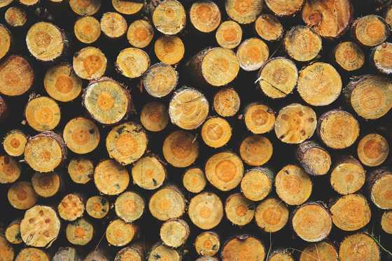
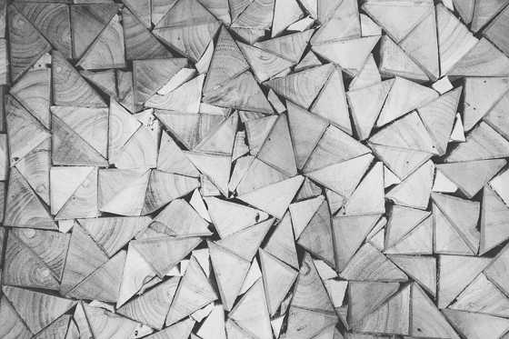
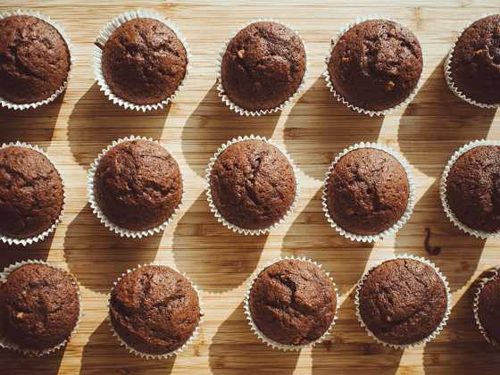
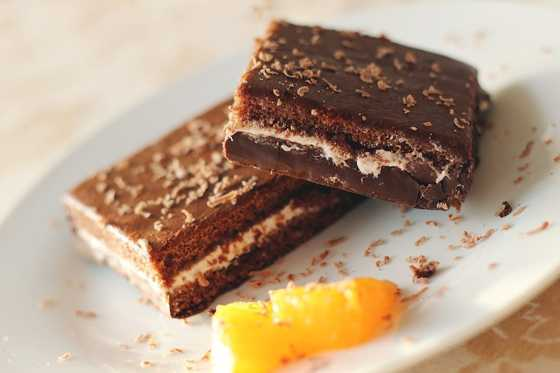
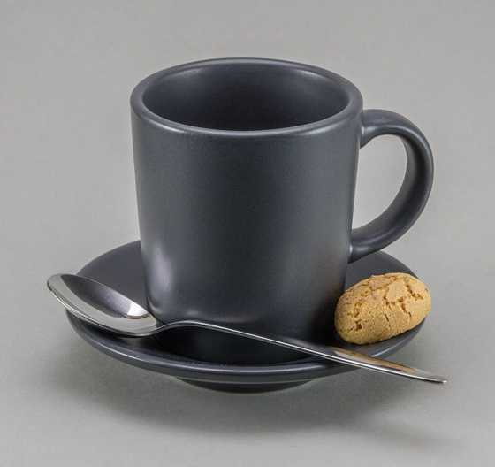

富山県南砺市宗守・家具工房のとなりのカフェ
木漏れ日のぬくもりと、
ものづくりの工房の隅っこで。
cafe nookは、オーダーメイド家具のインディゴファニチャーに併設されたカフェ。「木漏れ日の心地よさ」と「工房のワクワク感」をコンセプトにしたお店です。
お店の由来・想い
家具屋さんの、隠れ家のようなカフェ。
紹介記事によると、cafe nook(カフェ ヌーク)は、南砺市宗守のオーダーメイド家具店「インディゴファニチャー」に併設されたカフェです。店内のテーブルや椅子は家具職人のご主人が手がけ、スイーツは奥様の手づくりと紹介されています。天窓からの自然光、ソファ席、あたたかな暖炉のある空間で、ゆっくり過ごせます。
「nook」という英単語には「隅」「隠れ家」といった意味があります(辞書上の意味です。店名に込められた由来は確認できていません)。
情報源: つたえる富山(紹介記事)/fukunote(紹介記事)/インディゴファニチャー/Instagram
上記以外の文章(見出しの言い回しなど)は制作側の表現です。




メニュー
手づくりのおやつと、一杯のコーヒー。
紹介記事では、マフィン、パウンドケーキ、プリンなどの手づくりスイーツと、コーヒー・紅茶が紹介されています。スイーツは日によって変わるとされ、テイクアウトにも対応しているとのことです。

写真はフリー素材のイメージです。お店で提供しているものそのものではありません。営業時間・価格・詳細メニューは確認できたものだけを載せ、他は「準備中」としています。




口コミ
こんな声が届きそうです。
木のテーブルがやさしくて、つい長居してしまいました。マフィンがほっとする味です。
家具屋さんのとなりという雰囲気が素敵。あたたかい席でコーヒーをゆっくり飲めました。
手づくりのプリンをテイクアウト。ひと休みしたくなったときに、また寄りたいお店です。
上の3件は制作側が作成したイメージ例で、実在のお客様の声ではありません。
アクセス
ご案内
| 所在地 | 〒939-1715 富山県南砺市宗守558-10 |
|---|---|
| 電話 | 準備中 |
| 営業時間 | 準備中 |
| 定休日 | 準備中 |
| SNS | Instagram @cafenookbyindigofurniture |
営業日・時間は情報源により異なるため、掲載していません。最新情報はInstagramをご確認ください。